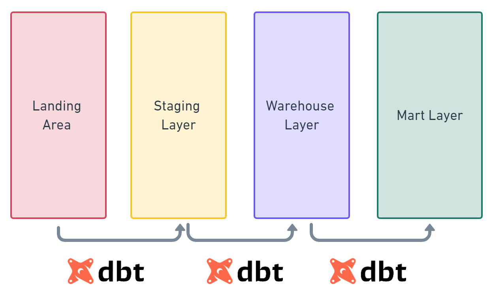

dbt
Misc
List of available DB Adaptors
- Runs on Python, so adaptors are installed via pip
Notes from
Resources
- Create a Local dbt Project
- Uses docker containers to set up a local dbt project and a local postgres db to play around with
- Create a Local dbt Project
Architecture
Typical Workflow
dbt deps dbt seed dbt snapshot dbt run dbt run-operation {{ macro_name }} dbt testStyle Guide Components
- Naming conventions (the case to use and tense of the column names)
- SQL best practices (commenting code, CTEs, subqueries, etc.)
- Documentation standards for your models
- Data types of date, timestamp, and currency columns
- Timezone standards for all dates
Castor - tool that takes your project and autofills much of the documentation

- Has a free tier
- Very helpful if you have the same column name in multiple datasets, you don’t have to keep defining it
- Tribal Knowledge
- When a dataset is discussed in a team slack channel, Castor pulls the comments and adds them to the documentation of the dataset
Lightdash - BI tool for dbt projects - free tier for self hosting
{kind=link}
Set-Up
- Basic set-up: Article
- Example uses postgres adaptor
- Within a python virtual environment
Create:
python3 -m vevn dbt-venvActivate:
source dbt-venv/bin/activate- Should be able to see a
(dbt-venv)prefix in every line on the terminal
- Should be able to see a
Install dbt-core:
pip install dbt-core- Specific version:
pip install dbt-core==1.3.0 - Confirm installation by checking version:
dbt --version
- Specific version:
Install plugins
pip install dbt-bigquery pip install dbt-spark # etc...
Description
- Built for data modeling
- Models are like sql queries
- Current understanding
- Data is brought in from warehouses via base models and basic transformations are performed (models >> staging directory)
- Then the data is transformed to the desired state via intermediate models and calculations performed (models >> marts directory)
- Then the final product is stored in the data directory
- Modularizes SQL code and makes it reusable across “models”
.png)
- Running the orders model also runs the base_orders model and base_payments model (i.e. dependencies for orders)
- Not sure this exactly right. Seems like doing this would result in wasting time rerunning the same dependencies multiple times
- base_orders and base_payments are independent in that they can also be used in other models
- Creates more dependable code because you’re using the same logic in all your models
- Makes runs faster since you aren’t wasting time and resources running the same blocks of code over and over again
- Running the orders model also runs the base_orders model and base_payments model (i.e. dependencies for orders)
- You can schedule running sets of models by tagging them (e.g. #daily, #weekly)
- Version Control
- Snapshots provide a mechanism for versioning datasets
- Within every yaml file is an option to include the version
- Package add-ons that allow you to interact with spark, snowflake, duckdb, redshift, etc.
- Documentation for every step of the way
.yml files can be used to generate a website (localhost:8080) around all of your dbt documentation.

dbt docs generate dbt docs serve
Optimizations
- Runs parallelized
- Models that have dependencies aren’t run until their upstream models are completed but models that don’t depend on one another are run at the same time.
- The thread parameter in your
dbt_project.ymlspecifies how many models are permitted to run in parallel
Project Files
Project Templates
- Style Guide
- More detailed: link
- Example Starter Project
.png)
- Style Guide
profiles.yml- Not included in project directory
- Only have to worry about this file if you set up dbt locally.
- doc
- Created by
dbt initin~/.dbt/ - Contents
- database connection, database credentials that dbt will use to connect to the data warehouse
- If you work on multiple projects locally, the different project names (configured in the
dbt_project.ymlfile) will allow you to set up various profiles for other projects. - … something about “targets” but not sure what this is or how it’s used
dbt_project.yml- Docs
- Main configuration file for your project
- Fill in your project name and profile name

- Add variables and models
packages.ymlList of external dbt packages you want to use in your project
Format
packages: - package: dbt-labs/dbt_utils version: 0.7.3
Components
Variables
Defined in the
project.ymland used in modelsExample: Assigning States to Regions
vars: state_lookup: Northeast: - CT - ME Midwest: - IL - IN
Using the variables in a model
{# Option 1 #} SELECT state, CASE {% for k, v in var("state_lookup").items() %} WHEN state in ({% for t in v %}'{{ t }}'{% if not loop.last %}, {% endif %}{% endfor %}) THEN {{ k }}{% endfor %} ELSE NULL END AS region FROM {{ ref('my_table') }} {# Option 2 #} SELECT state, CASE {% for k, v in var("state_lookup").items() %} WHEN state in ({{ t|csl }}) THEN {{ k }}{% endfor %} ELSE NULL END AS region FROM {{ ref('my_table') }}
Models
Misc
- Tagging
- Allows you to run groups of models
- Example
dbt run --models tag:daily
- Example
- Allows you to run groups of models
Best Practices
Modularity where possible
- Same as the functional mindset: “if there’s any code that’s continually repeated, then it should be a function(i.e. its own separate model in dbt).”
Readability
- Comment
- Use CTEs instead of subqueries
- Use descriptive names
- Example: if you are joining the tables “users” and “addresses” in a CTE, you would want to name it “users_joined_addresses” instead of “user_addresses”
Example: Comments, CTE, Descriptive Naming
WITH Active_users AS ( SELECT Name AS user_name, Email AS user_email, Phone AS user_phone, Subscription_id FROM users --- status of 1 means a subscription is active WHERE subscription_status = 1 ), Active_users_joined_subscriptions AS ( SELECT Active_users.user_name, active_users.user_email, Subscriptions.subscription_id, subscriptions.start_date , subscriptions.subscription_length FROM active_users LEFT JOIN subscriptions ON active_users.subscription_id = subscriptions.subscription_id ) SELECT * FROM Active_users_joined_subscriptions
Categories
Staging
- Contains all the individual components of your project that the other layers will use in order to craft more complex data models.
- Each model bears a one-to-one relationship with the source data table it represents (i.e. 1 staging model per source)
- Typical Transformations: recasting, column renaming, basic computations (such as KBs to MBs or GBs), categorization (e.g. using CASE WHEN statements).
- Aggregations and joins should also be avoided
- Usually materialized as views.
- Allows any intermediate or mart models referencing the staging layer to get access to fresh data and at the same time it saves us space and reduces costs.
- Example
- Both the Stripe and Braintree payments are recast into a consistent shape, with consistent column names.
Marts
- Where everything comes together in a way that business-defined entities and processes are constructed and made readily available to end users via dashboards or applications.
- Since this layer contains models that are being accessed by end users it means that performance matters. Therefore, it makes sense to materialize them as tables.
- If a table takes too much time to be created (or perhaps it costs too much), then you may also need to consider configuring it as an incremental model.
- A mart model should be relatively simple and therefore, too many joins should be avoided
- Example
- A monthly recurring revenue (MRR) model that classifies revenue per customer per month as new revenue, upgrades, downgrades, and churn, to understand how a business is performing over time.
- It may be useful to note whether the revenue was collected via Stripe or Braintree, but they are not fundamentally separate models.
- A monthly recurring revenue (MRR) model that classifies revenue per customer per month as new revenue, upgrades, downgrades, and churn, to understand how a business is performing over time.
Base/Intermediate
- Base
- Basic transformations (e.g. cleaning up the names of the columns, casting to different data types)
- Other models use these models as data sources
- Prevents errors like accidentally casting your dates to two different types of timestamps, or giving the same column two different names.
- Two different timestamp castings can cause all of the dates to be improperly joined downstream, turning the model into a huge disaster
- Prevents errors like accidentally casting your dates to two different types of timestamps, or giving the same column two different names.
- Usually occuring in staging
- Read directly from a source, which is typically a schema in your data warehouse
- Source object:
{ source('campaigns', 'channel') }- campaigns is the name of the source in the .yml file
- channel is the name of a table from that source
- Source object:
- Intermediate
- Brings together the atomic building blocks that reside on staging layer such that more complex and meaningful models are constructed
- Usually occuring in marts
- Additional transformations that particular marts-models require
- Created to isolate complex operations
- Typically used for joins between multiple base models
- Created to isolate complex operations
- Should not be directly exposed to end users via dashboards or applications
- Other models should reference them as Common Table Expressions although there may be cases where it makes sense to materialize them as Views
- Macros called via
run-operationcannot reference ephemeral objects such as CTEs - Recommended to start with ephemeral objects unless this doesn’t work for the specific use case
- Whenever you decide to materialize them as Views, it may be easier to to do so in a custom schema, that is a schema outside of the main schema defined in your dbt profile.
- Macros called via
- If the same intermediate model is referenced by more than one model then it means your design has probably gone wrong.
- Usually indicates that you should consider turning your intermediate model into a macro. reference the base models rather than from a source
- Reference object
{ ref('base_campaign_types') }- base_campaign_types is a base model
- Base
Macros
- Similar to functions in excel
- Define custom functions in the macros folder or override default macros and macros from a package
- See bkmks for tutorials on writing custom macros with jinja
- {dbtplyr} macros
- dplyr tidy selectors, across, etc.
Seeds
- Seeds are csv files that you add to your dbt project to be uploaded to your data warehouse.
- Uploaded into your data warehouse using the
dbt seedcommand
- Uploaded into your data warehouse using the
- Best suited to static data which changes infrequently.
- Use Cases:
- A list of unique codes or employee ids that you may need in your analysis but is not present in your current data.
- A list of mappings of country codes to country names
- A list of test emails to exclude from analysis
- Use Cases:
- Referenced in downstream models the same way as referencing models — by using the
reffunction
Directories
Models
- Sources (i.e. data sources) are defined in
src_<source>.ymlfiles in your models directory- .yml files contain definitions and tests
- .doc files contain source documentation
- Models (i.e. sql queries) are defined
stg_<source>.yml- .yml files contain definitions and tests
- .doc files contain source documentation
- The actual models are the .sql files
- Example
.png)
- Staging:
- Different data sources will have separate folders underneath staging (e.g. stripe).
- Marts:
- Use cases or departments have different folders underneath marts (e.g. core or marketing)
- Staging:
- Sources (i.e. data sources) are defined in
Data
- Contains all manual data that will be loaded to the database by dbt.
- To load the .csv files in this folder to the database, you will have to run the
dbt seedcommand. - For github or other repos, do not put large files or files with sensitive information here
- Acceptable use cases: yearly budget, status mappings, category mappings, etc
Snapshots
- Captures of the state of a table at a particular time
- Docs
- build a slowly changing dimension (SCD) table for sources that do not support change data capture (CDC)
- Example
- Every time the status of an order change, your system overrides it with the new information. In this case, there we cannot know what historical statuses that an order had.
- Daily snapshots of this table builds a history and allows you to track order statuses

Packages
- Available Packages: link
- Install Packages -
dbt deps - Packages
- audit-helper
- Compares columns, queries; useful if refactoring code or migrating db
- codegen
- Generate base model, barebones model and source .ymls
- dbt-athena - Adaptor for AWS Athena
- dbt-expectations
- Data validation based on great expectations py lib
- dbt-utils
- Ton of stuff for tests, queries, etc.
- dbtplyr - Macros
- dplyr tidy selectors, across, etc.
- dbt-duckdb - Adapter for duckdb
- external-tables
- Create or replace or refresh external tables
- Guessing this means any data source (e.g. s3, spark, google, another db like snowflake, etc.) that isn’t the primary db connected to the dbt project
- logging
- Provides out-of-the-box functionality to log events for all dbt invocations, including run start, run end, model start, and model end.
- Can slow down runs substantially
- re_data
- Dashboard for monitoring, macros, models
- profiler
- Implements dbt macros for profiling database relations and creating doc blocks and table schemas (schema.yml) containing said profiles
- spark-utils
- Enables use of (most of) the {dbt-utils} macros on spark
- audit-helper
Data Validation and Unit Tests

- Misc
- Built-in support for CI/CD pipelines to test your “models” and stage them before committing to production
- Run test -
dbt test - See also
- Most of the tests are defined in a models-type .yml file in the models directory
- Can be applied to a model or a column
- Macros: Pre-Made or Custom
- Custom (aka Singular) tests should be located in a tests folder.
dbt will evaluate the SQL statement.
The test will pass if no row is returned and failed if at least one or more rows are returned.
Useful for testing for some obscurity in the data
Example: Check for duplicate rows when joining two tables
select a.id from {{ ref(‘table_a’) }} a left join {{ ref(‘table_b’) }} b on a.b_id = b.id group by a.id having count(b.id)>1- i.e. If I join table a with table b, there should only be one record for each unique id in table a
- Process
- Join the tables on their common field
- Group them by the id that should be distinct
- Count the number of duplicates created from the join.
- This tells me that something is wrong with the data.
- Add a having clause to filter out the non-dups
- Custom (aka Singular) tests should be located in a tests folder.
- Mock data

- Data used for unit testing SQL code
- To ensure completeness, it’s best if analysts or business stakeholders are the ones provide test cases or test data
- Store in the “data” folder (typically .csv files)
- each CSV file represents one source table
- should be stored in a separate schema (e.g. unit_testing) from production data
- dbt seed (see below, Other >> seeds) command is used to load mock data into the data warehouse
- Tests
- Freshness (docs) - Used to define the acceptable amount of time between the most recent record, and now, for a table
Example
sources: - name: users freshness: warn_after: count: 3 period: day error_after: count: 5 period: day
- Freshness (docs) - Used to define the acceptable amount of time between the most recent record, and now, for a table
- Example:
project.yml

- Example: Unit Test
Add test to
dbt_project.ymlseeds: unit_testing: revenue: schema: unit_testing +tags: - unit_testing- Every file in the unit_testing/revenue folder will be loaded into unit_testing
- Executing
dbt build -s +tag:unit_testingwill run all the seeds/models/tests/snapshots with tag unit_testing and their upstreams
Create macro that switches the source data in the model being tested from production data (i.e. using
{ source() }) to mock data (i.e. usingref) when a unit test is being run{% macro select_table(source_table, test_table) %} {% if var('unit_testing', false) == true %} {{ return(test_table) }} {% else %} {{ return(source_table) }} {% endif %} {% endmacro %}- Article calls this file “select_table.sql”
- 2 inputs: “source_table” (production data) and “test_table” (mock data)
- macro returns the appropriate table based on the variable in the dbt command
- If the command doesn’t provide unit_testing variable or the value is false , then it returns source_table , otherwise it returns test_table.
Add macro code chunk to model
{{ config ( materialized='table', tags=['revenue'] ) }} {% set import_transaction = select_table(source('user_xiaoxu','transaction'), ref('revenue_transaction')) %} {% set import_vat = select_table(source('user_xiaoxu','vat'), ref('revenue_vat')) %} SELECT date , city_name , SUM(amount_net_booking) AS amount_net_booking , SUM(amount_net_booking * (1 - 1/(1 + vat_rate))) AS amount_vat FROM {{ import_transaction }} LEFT JOIN {{ import_vat }} USING (city_name) GROUP BY 1,2- Inside the
{%...%}, the macro “select_table” is called to set the local variables, “import_transaction” and “import_vat” which are later used in the model query - Model file is named “revenue2.sql”
- Inside the
Run model and test using mock data:
dbt build -s +tag:unit_testing --vars 'unit_testing: true'- Run model with production data (aka source data):
dbt build -s +tag:revenue --exclude tag:unit_testing
- Run model with production data (aka source data):
Compare output
version: 2 models: - name: revenue meta: owner: "@xiaoxu" tests: - dbt_utils.equality: compare_model: ref('revenue_expected') tags: ['unit_testing']- Model properties file that’s named
revenue.ymlin the models directory - By including tags: [‘unit_testing’] we can insure that we don’t run this test in production (see build code above with
--exclude tag:unit_testing
- Model properties file that’s named
Macro for comparing numeric output
{% test advanced_equality(model, compare_model, round_columns=None) %} {% set compare_columns = adapter.get_columns_in_relation(model) | map(attribute='quoted') %} {% set compare_cols_csv = compare_columns | join(', ') %} {% if round_columns %} {% set round_columns_enriched = [] %} {% for col in round_columns %} {% do round_columns_enriched.append('round('+col+')') %} {% endfor %} {% set selected_columns = '* except(' + round_columns|join(', ') + "), " + round_columns_enriched|join(', ') %} {% else %} {% set round_columns_csv = None %} {% set selected_columns = '*' %} {% endif %} with a as ( select {{compare_cols_csv}} from {{ model }} ), b as ( select {{compare_cols_csv}} from {{ compare_model }} ), a_minus_b as ( select {{ selected_columns }} from a {{ dbt_utils.except() }} select {{ selected_columns }} from b ), b_minus_a as ( select {{ selected_columns }} from b {{ dbt_utils.except() }} select {{ selected_columns }} from a ), unioned as ( select 'in_actual_not_in_expected' as which_diff, a_minus_b.* from a_minus_b union all select 'in_expected_not_in_actual' as which_diff, b_minus_a.* from b_minus_a ) select * from unioned {% endtest %}- File called “advanced_equality.sql”